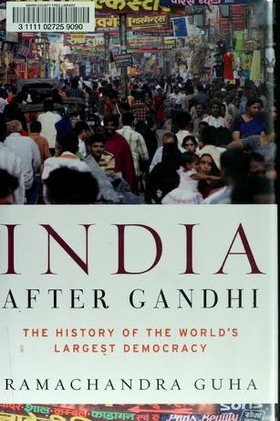

Library › Psychology & People
India After Gandhi — Summary & Key Lessons

The epic history of the world's largest democracy.
📖 OPEN THE FULL INTERACTIVE BREAKDOWN →🌐 Read it in Hindi, Hinglish, Gujarati, Tamil & 22 more languages — free, with audio.
💡 The Big Idea
India's survival as a democracy was the least likely outcome of the 20th century — a poor, illiterate, multilingual subcontinent was supposed to fracture. Guha shows why it didn't: a mix of visionary leaders, flexible institutions, federal bargaining and a culture of argument. The book is both a warning — democracy is never guaranteed, it is daily work — and an inspiration: unity can be built on difference, not despite it.
🧠 The 7 Key Lessons
Lesson 1: Unity Is Built, Not Given
The Making of a Nation
At independence, experts predicted India would Balkanize — too many languages, religions, regions. Guha's history shows unity was an ongoing construction project: the constitution, the states reorganization, the army, the railways, the Election Commission — all built deliberately to bind a fractured country. The lesson: unity in any group is not a starting condition but a daily achievement. Teams, families and nations stay together because someone keeps building the bridges.
📖 Example: The peaceful reorganization of states on linguistic lines — which could have torn India apart — became one of its greatest stabilizers, because it was done through negotiation, not force. Read the full example →
⚡ Do this: Identify one 'bridge' that keeps your team or family united. Strengthen it this month with a deliberate act.
Lesson 2: Institutions Outlast Individuals
The Democratic Frame
Guha emphasizes that India's survival owed less to any single leader than to institutions: free elections, an independent judiciary, a professional army, a free press. Even flawed leaders could not destroy the system because the institutions held. The lesson: build systems that survive you. Personal charisma is fragile; institutions — rules, processes, culture — are the only durable form of leadership.
📖 Example: The Election Commission, run by ordinary officials, repeatedly conducted free elections even during emergencies — the institution, not the politicians, protected democracy. Read the full example →
⚡ Do this: What would happen to your project or team if you left tomorrow? Strengthen one institution — a process, a document, a culture — that would survive you.
Lesson 3: Difference Is a Resource, Not a Threat
Unity in Diversity
India's diversity — languages, religions, castes, regions — was its predicted downfall and turned out to be its strength. Guha shows how the republic learned to give difference political space: states, languages, federal power-sharing. The lesson: homogeneous groups feel safer but stay weaker; diverse groups are harder to manage but far more adaptive. The goal is not to erase difference but to give it room within shared rules.
📖 Example: Each linguistic state became a cultural home and a political bargaining unit — difference channeled into the system, not suppressed by it. The real test of this lesson is a bad day: the principle that survives a crisis, a tight deadline and a doubting… Read the full example →
⚡ Do this: In your team, identify one 'difference' you have been smoothing over. Give it legitimate space — a distinct role, voice or process.
Lesson 4: The Leader's Duty Is to the Republic, Not the Crowd
Nehru and His Critics
Guha's portraits of leaders — Nehru, Patel, Ambedkar, Rajaji — show that the founders argued fiercely yet shared one conviction: the republic mattered more than any individual. When Nehru made mistakes, the system — courts, press, states — corrected him. The lesson: the mark of a healthy organization is that no one is above correction. Leaders who treat themselves as indispensable are the ones who damage what they lead.
📖 Example: The founders' public arguments — over language, Kashmir, planning — look like chaos but were actually the system's immune response: disagreement kept power accountable. In practice, 'leader's duty is to the republic, not the crowd' shows up in tiny daily… Read the full example →
⚡ Do this: Who in your organization is above correction? Restore one check on that power — a review, a dissenting voice, a rule applied equally.
Lesson 5: Crises Reveal, They Don't Create
The Emergency and After
The 1975 Emergency — when democracy itself was suspended — is Guha's darkest chapter. But his point is not the crisis; it is the recovery: the people voted the regime out, and the institutions rebuilt themselves. The lesson: a system's true character shows in how it handles its worst moment. Preparation, memory and accountability determine whether a crisis breaks you or reveals your strength.
📖 Example: After the Emergency, India's press, judiciary and civil society emerged stronger, and subsequent governments were far more careful with democratic norms. Most people nod at this principle and change nothing. The gap between agreeing and acting is where the… Read the full example →
⚡ Do this: Think of your last crisis. What did it reveal about your true values? Write one reform you carried out of it — and one you still owe.
Lesson 6: Ordinary People Are the Real Heroes
The Voter and the Citizen
Guha repeatedly notes the extraordinary patience and wisdom of ordinary Indian voters — illiterate farmers who understood democracy better than many pundits, who voted thoughtfully and punished tyranny. The lesson: respect the people you serve. The success of any democracy, company or movement rests on the quiet intelligence of ordinary participants, not the brilliance of leaders. Never underestimate the base.
📖 Example: The 1977 election — where millions voted against the Emergency despite risks — remains democracy's greatest evidence that ordinary people can save a system. The uncomfortable truth about this lesson: it requires doing the boring version first — the… Read the full example →
⚡ Do this: Identify one 'ordinary' person whose judgment you have undervalued. Ask them one real question and act on the answer.
Lesson 7: History Is the Memory of a Republic
The Uses of the Past
Guha's larger project is to give Indians a shared, honest history — because a democracy needs a common memory to argue productively. Distorted history — either glorified or condemned — poisons public debate. The lesson: tell true stories about your past — personal and collective. A team or family that can honestly narrate its own history can navigate its future; one that mythologizes or forgets repeats its mistakes.
📖 Example: Guha documents both the triumphs and the failures of the republic — arguing that only an honest account makes citizenship meaningful. history Is the Memory of a Republic This is easy to understand and hard to live — which is precisely why it's valuable.… Read the full example →
⚡ Do this: Write an honest one-page history of your team or family: three successes, three failures, three lessons. Share it with the people involved.
✅ 5-Step Action Plan
- Strengthen one bridge that keeps your group united.
- Build one institution that would survive you.
- Give legitimate space to one difference in your team.
- Restore one check on power that has eroded.
- Write an honest one-page history of your team or family.
⚠️ When This Doesn't Work
Guha's 'democracy is a daily achievement' is the most important history of modern India ever written — and the Emergency is the chapter that proves his point and his warning: in 1975, the world's largest democracy suspended itself for 21 months — and it survived because the people remembered what it was for. Guha's book underweights how close the experiment came to ending, and how much of its survival was luck and memory. The caveat for readers: celebrating India's democracy is fine; understanding that it must be re-earned every election is the actual lesson. The Emergency was not ancient history — it was 21 months of the present.
💀 The Graveyard Proves It
📜 The Emergency of 1975 — The 21 Months When India's Democracy Was Suspended. Burn: 21 months, thousands jailed, press gagged — and the system survived only by recovering its memory. Read the full case study →
💬 Best Quotes from India After Gandhi
- “India's unity was not given; it had to be made and remade, every day.”
- “Democracy in India was a gamble that paid off — because ordinary people insisted on it.”
- “The republic has survived because it has always argued with itself.”
Interactive version: mark lessons as read, listen in your language, share quote cards.